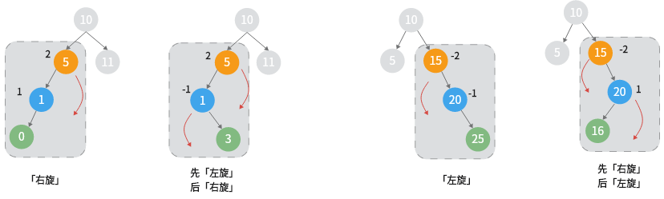

树「学习」
一、树的四种遍历
深度优先遍历（DFS）：前序（DLR）、中序（LDR）、后序（LRD）
广度优先遍历（BFS）：层序遍历
节点的定义：
前序
func pOrderStack(root *treeNode) {
if root == nil {
return
}
var st []*treeNode
st = append(st, root)
var pnt []int
for len(st) > 0 {
// 出栈，访问节点
cur := st[len(st)-1]
st = st[:len(st)-1]
pnt = append(pnt, cur.val)
// 右节点入栈（存在的话）
if cur.right != nil {
st = append(st, cur.right)
}
// 左节点入栈
if cur.left != nil {
st = append(st, cur.left)
}
}
fmt.Println(pnt)
}
中序
- 从根节点开始入栈，一直往左，直到最左叶子节点
- 出栈，访问节点
- 将右节点当作步骤1的根节点（若存在）
// 代码优化
func ldrOrderStack2(root *treeNode) {
if root == nil {
return
}
var st []*treeNode
// 出栈，访问元素
// 如果存在右节点，继续入栈，直到最左叶子节点
var pnt []int
tmp := root
for len(st) > 0 || tmp != nil {
// 入栈直到最左节点
for tmp != nil {
st = append(st, tmp)
tmp = tmp.left
}
// 出栈，访问节点元素
tmp = st[len(st)-1]
st = st[:len(st)-1]
pnt = append(pnt, tmp.val)
// 继续找右节点的最左叶子节点
tmp = tmp.right
}
return
}
后序
- 从根节点开始入栈，直到最左节点
- 获取栈顶，判断右节点
- 右节点不存在：访问该节点，出栈
- 右节点已经访问过：访问该节点，出栈
- 右节点未访问，进入步骤3
- 将该右节点当作步骤1的根节点
func lrdOrderStack(root *treeNode) {
var st []*treeNode
tmpRoot := root
pre := root
for len(st) > 0 || tmpRoot != nil {
for tmpRoot != nil {
st = append(st, tmpRoot)
tmpRoot = tmpRoot.left
}
tmpRoot = st[len(st)-1]
// 当节点右节点为空 或者 右子树已经访问过的情况下，访问根节点
if tmpRoot.right == nil || tmpRoot.right == pre {
fmt.Printf("%d ", tmpRoot.val)
pre = tmpRoot
tmpRoot = nil // 将当前节点标记为空，避免下一个循环又将该节点入栈
st = st[:len(st)-1]
} else {
// 右节点还没访问，后序遍历右节点
tmpRoot = tmpRoot.right
}
}
return
}
层序
层序遍历使用队列实现：
func levelOrder(root *treeNode) {
if root == nil {
return
}
var queue []*treeNode
queue = append(queue, root)
for len(queue) > 0 {
cur := queue[0]
queue = queue[1:]
fmt.Printf("%d ", cur.val)
if cur.left != nil {
queue = append(queue, cur.left)
}
if cur.right != nil {
queue = append(queue, cur.right)
}
}
return
}
四种遍历的时间、空间复杂度
| 遍历 | 时间复杂度 | 空间复杂度 |
|---|---|---|
| 先序 | O(n) 递归调用的时间复杂度为O(1)，递归调用的次数为数中节点的数量n |
栈实现的空间复杂度为：O(h) h为数的高度 在较差的情况下，h = n；如果是平衡二叉树，h = logn |
| 中序 | O(n) | 同上 |
| 后序 | O(n) | 同上 |
| 层序 | O(n) | O(w) w 为树的宽度 |
一些常见问题
判断子树
思路1. 递归
子问题是：判断左右子树是否会等于预期的子树（判断左右子树是否相等的问题也可以递归来实现）
// 判断根节点为起始的树与目标树是否相同
// 如果不相同，递归判断左子树和右子树
func isSubtree(root *TreeNode, subRoot *TreeNode) bool {
if root == nil && subRoot == nil {
return true
}
if root == nil {
return false
}
if isSameTree(root, subRoot) {
return true
}
return isSubtree(root.Left, subRoot) || isSubtree(root.Right, subRoot)
}
func isSameTree(p *TreeNode, q *TreeNode) bool {
if p == nil && q == nil {
return true
}
if p == nil || q == nil {
return false
}
if p.Val != q.Val {
return false
}
return isSameTree(p.Left, q.Left) && isSameTree(p.Right, q.Right)
}
思路2. dfs（先序） + kmp
设主树s，子树t，主树的先序序列 ss，子树的先序序列 tt
利用先序序列的性质：
如果A.【 t 是 s 的子树】 那么B.【ss 中 包含 tt】
可以知道 B 是 A 的必要条件，是没有办法从 B 推出 A 的，原因是什么呢，假设主树：[4, 5]，子树：[4, nil, 5]，这种情况下的先序序列都是 4 5，但是两颗树是不一样的
但是我们可以通过补充两个代表空的左右节点来解决这个问题
// 通过树的先序遍历
// 补充树的每个节点，让度为2，输出树的先序遍历
// 判断主树的序列包含子树的序列
func isSubtree2(root *TreeNode, subRoot *TreeNode) bool {
nums1 := dlrNums(root)
nums2 := dlrNums(subRoot)
return kmpSearch(nums1, nums2)
}
const lrNilVal = -10001
var leftNilNode = TreeNode{
Val: lrNilVal,
}
var rightNilNode = TreeNode{
Val: lrNilVal,
}
func dlrNums(root *TreeNode) []int {
var nums []int
if root == nil {
return nums
}
var st []*TreeNode
st = append(st, root)
tmpRoot := root
for len(st) > 0 {
// pop
tmpRoot = st[len(st) - 1]
st = st[:len(st) - 1]
// visit
nums = append(nums, tmpRoot.Val)
if tmpRoot.Val != lrNilVal && tmpRoot.Left == nil {
tmpRoot.Left = &leftNilNode
}
if tmpRoot.Val != lrNilVal && tmpRoot.Right == nil {
tmpRoot.Right = &rightNilNode
}
if tmpRoot.Right != nil {
st = append(st, tmpRoot.Right)
}
if tmpRoot.Left != nil {
st = append(st, tmpRoot.Left)
}
}
return nums
}
// i
// nums a a b a a b a a c
// pat
// j
func kmpSearch(nums, pat []int) bool {
next := getNext(pat)
j := 0
for i := 0; j < len(pat) && i < len(nums); i++ {
for ; j > 0 && nums[i] != pat[j]; j = next[j-1]{}
if nums[i] == pat[j] {
j++
}
}
return j == len(pat)
}
func getNext(pat []int) []int {
next := make([]int, len(pat))
next[0] = 0
for l, j := 0, 1 ; j < len(pat); j++ {
for l > 0 && pat[l] != pat[j] {l = next[l-1]}
if pat[l] == pat[j] {
l++
}
next[j] = l
}
return next
}
学到了！
判断子树可以通过补充空子树，然后使用先序序列来判断
是否存在路径和为 sum
思路：递归
原问题：是否存在从当前节点（根节点）到叶子节点的路径，和为 sum 子问题：是否存在从当前节点（根节点的子节点）到叶子节点的路径，和为 sum - val（父节点的值）
结束条件：当前节点为叶子节点
func hasPathSum(root *TreeNode, targetSum int) bool {
if root == nil {
return false
}
return havePathToLeaf(root, targetSum)
}
func havePathToLeaf(root *TreeNode, tgtSum int) bool {
// end
if root.Left == nil && root.Right == nil {
return root.Val == tgtSum
}
have1, have2 := false, false
if root.Left != nil {
have1 = havePathToLeaf(root.Left, tgtSum - root.Val)
}
if root.Right != nil {
have2 = havePathToLeaf(root.Right, tgtSum - root.Val)
}
return have1 || have2
}
二、二叉搜索树
二叉搜索树：左子树所有节点的值 < 根节点 < 右子树所有节点的值
添加节点
转化成 递归插入左子树或者右子树 即可
func insertIntoBST2(root *TreeNode, val int) *TreeNode {
if root == nil {
return &TreeNode{
Val: val,
}
}
pre := root
tmpRoot := root
for tmpRoot != nil {
if val < tmpRoot.Val {
pre = tmpRoot
tmpRoot = tmpRoot.Left
} else {
pre = tmpRoot
tmpRoot = tmpRoot.Right
}
}
newNode := &TreeNode{Val: val}
if val < pre.Val {
pre.Left = newNode
} else {
pre.Right = newNode
}
return root
}
删除节点
根据待删除节点的子树数量分为三种情况讨论：
- 没有子树
- 一棵子树
- 两棵子树
先给出具体实现
// delete 使用「嫁接」的方式来删除
func (bst *binarySearchTree) delete(val int) {
tgt := bst.root
if tgt == nil {
return
}
var parent *treeNode = nil
for tgt != nil {
// 找到目标节点（待删除节点）
if tgt.val == val {
break
}
parent = tgt
if val < tgt.val {
tgt = tgt.left
} else {
tgt = tgt.right
}
}
// 不存在
if tgt == nil {
return
}
// 不存在子树或者只有一棵子树的情况
// - 若存在子树，则使用子树代替待删除节点即可
// - 否则直接将待删除节点删除
if tgt.left == nil || tgt.right == nil {
if tgt.left == nil {
tgt = tgt.left
} else {
tgt = tgt.right
}
// 存在两棵子树的情况
// child 为右节点根节点
} else {
tmp := tgt.right
// 将待删除节点的左子树嫁接到右子树的最左节点
for tmp.left != nil {
tmp = tmp.left
}
tmp.left = tgt.left
tgt = tgt.right
}
if parent == nil {
bst.root = tgt
return
}
if parent.left != nil && parent.left.val == val {
parent.left = tgt
} else {
parent.right = tgt
}
}
func (bst *binarySearchTree) delete(num int) {
cur := bst.root
// 若树为空，直接提前返回
if cur == nil {
return
}
// 待删除节点之前的节点位置
var pre *treeNode = nil
// 循环查找，越过叶节点后跳出
for cur != nil {
if cur.val == num {
break
}
pre = cur
if cur.val < num {
// 待删除节点在右子树中
cur = cur.right
} else {
// 待删除节点在左子树中
cur = cur.right
}
}
// 若无待删除节点，则直接返回
if cur == nil {
return
}
// 子节点数为 0 或 1
if cur.left == nil || cur.right == nil {
var child *treeNode = nil
// 取出待删除节点的子节点
if cur.left != nil {
child = cur.left
} else {
child = cur.right
}
// 将子节点替换为待删除节点
if pre.left == cur {
pre.left = child
} else {
pre.right = child
}
// 子节点数为 2
} else {
// 获取中序遍历中待删除节点 cur 的下一个节点
tmp := cur.right
for tmp.left != nil {
tmp = tmp.left
}
// 递归删除节点 tmp
bst.remove2(tmp.val)
// 用 tmp 覆盖 cur
cur.val = tmp.val
}
}
子树数量 = 0
子树数量 = 1
子树数量 = 2
找到目标节点
将 目标节点的字数数量变成 1 （有多种不同的实现方式，这里使用的是嫁接的方式）

经过第二步的处理之后，就变成了子树数量 = 1 的情况

总结：
| 子树数量 | 操作 |
|---|---|
| 0 | 直接删除 |
| 1 | 子树代替目标节点 |
| 2 | 重新构建子树，使其只有一颗子树，然后使用上面方法 |
构建
判断是否是二叉搜索树
// 从二叉搜索树当前节点的值可以推出左右节点的取值区间，递归判断每个节点即可
func isValidBST(root *TreeNode) bool {
if root == nil {
return true
}
return jud(root, math.MinInt, math.MaxInt)
}
func jud(root *TreeNode, start, end int) bool {
if root == nil {
return true
}
if root.Val <= start || root.Val >= end {
return false
}
return jud(root.Left, start, root.Val) && jud(root.Right, root.Val, end)
}
三、AVL - 二叉平衡搜索树
在二叉树的基础上，满足平衡性
平衡性
在某些情况下，二叉搜索树可能退化成类似链表的情况，为了避免这种情况引入平衡性。
平衡性使用平衡因子来体现，平衡因子 = |h(ls) - h(rs)|
即左右子树的高度差不能超过 1
| 树类型 | 最坏情况下的时间复杂度 | 插入、删除、查找 |
|---|---|---|
| 二叉搜索树 | O(n)(当整棵树只有左节点或者只有右节点的情况) |
O(logn) |
| 平衡二叉搜索树 | O(logn) |
效率更高(都为O(logn)) |
空树
空树也是一棵 AVL 树
节点高度、平衡因子
节点高度
- 节点高度 表示节点到最远叶子节点的举例（也就是边的数量）
- 叶子节点的高度 = 0
- 空节点的高度 = -1
获取节点高度 更新节点高度：
func (t *avlTree) getHeight(node *treeNode) int {
// 空节点高度为 -1 if node == nil {
return -1
}
return node.height
}
func (t *avlTree) updateHeight(node *treeNode) {
// 节点高度等于最高子树的高度 + 1
t.height = max(t.getHeight(node.left), t.getHeight(node.right)) + 1
}
获取节点平衡因子
// balanceFactor 获取平衡因子
// 设平衡因子为 f，平衡二叉树的平衡因子需满足：-1 <= f <= 1
func (t *avlTree) balanceFactor(node *treeNode) int {
// 空节点的平衡因子为 0
if node == nil {
return 0
}
// 节点平衡因子 = 左子树高度 - 右子树高度
return t.getHeight(node.left) - t.getHeight(node.right)
}
四种旋转类型
AVL 的特点就在于旋转（Roration），通过旋转可以让二叉树不失衡，根据节点的失衡情况，可以将分为四种旋转方式：左旋、右旋、先左旋再右旋、先右旋再左旋
左旋
具体图示分析与右旋类似
func (t *avlTree) leftRotate(node *treeNode) *treeNode {
child := node.right
// 消除碰撞，执行旋转
node.right = child.left
child.left = node
// 更新节点高度
t.updateHeight(node)
t.updateHeight(child)
return child
}
右旋

添加节点之后失衡

聚焦失衡的子树


碰撞
这里的 child 节点是没有右节点的，因此 node 节点的右旋过程是顺利的。在右旋操作中，如果 child 存在右节点，是会产生碰撞（碰撞只是为了个人方便记住存在这种情况引入的一个概念）的，那么在旋转之前，就必须消除碰撞：让 grandchild 作为 node 的左节点
一个有碰撞的例子：


// 右旋，返回平衡子树的根节点
func (t *avlTree) rightRotate(node *treeNode) *treeNode {
child := node.left
// 消除碰撞，执行旋转
node.left = child.right
child.right = node
// 更新节点高度
t.updateHeight(node)
t.updateHeight(child)
return child
}
先左旋后右旋
下面是同样的一颗 AVL 树，如果新节点添加在最左叶子节点的左节点，是能够通过一次右旋操作恢复平衡的，但是如果新节点添加在最左叶子节点的右节点，需要先通过一次左旋（这次左旋是不会产生碰撞的）达到类似于新节点是添加在最左边的效果，然后就能通过上面提到的右旋操作来恢复平衡
先右旋后左旋
相当于「先左旋后右旋」的镜像操作
「旋转」总结

设平衡因子为 f - 左偏树：f > 1 - 右偏树：f < -1
我们可以通过分别判断 node 和 child 的平衡因子来选择执行哪种旋转操作
| 失衡节点的 f | 子节点的 f | 操作 |
|---|---|---|
| > 1 | >= 0 | 右旋 |
| > 1 | < 0 | 先左旋后右旋 |
| < -1 | <= 0 | 左旋 |
| < -1 | > 0 | 先右旋后左旋 |
func (t *avlTree) rotate(node *treeNode) *treeNode {
// 失衡节点的平衡因子
bf := t.balanceFactor(node)
if bf > 1 {
if t.balanceFactor(node.left) >= 0 {
return t.rightRotate(node)
} else {
// 先左旋，后右旋
node.left = t.leftRotate(node.left)
return t.rightRotate(node)
}
} else if bf < -1 {
if t.balanceFactor(node.right) <= 0 {
return t.leftRotate(node)
} else {
// 先右旋，后左旋
node.right = t.rightRotate(node.right)
return t.leftRotate(node)
}
}
// 已经是平衡状态
return node
}
插入节点
平衡二叉搜索树在节点插入之后要维持树的平衡，从插入的节点开始，需要 自底向上执行旋转操作，使所有失衡节点恢复平衡
func (t *avlTree) insert(val int) {
t.root = t.insertHelper(t.root, val)
}
func (t *avlTree) insertHelper(node *treeNode, val int) *treeNode {
if node == nil {
return &treeNode{
val: val,
}
}
/* 1. 插入 */
if val < node.val {
node.left = t.insertHelper(node.left, val)
} else if val > node.val {
node.right = t.insertHelper(node.right, val)
} else {
// 重复节点不插入
return node
}
// 更新节点高度
t.updateHeight(node)
/* 2.执行旋转，恢复平衡 */
node = t.rotate(node)
return node
}
删除节点
func (t *avlTree) remove(val int) {
t.removeHelper(t.root, val)
}
func (t *avlTree) removeHelper(node *treeNode, val int) *treeNode {
if node == nil {
return nil
}
if val < node.val {
node.left = t.removeHelper(node.left, val)
} else if val > node.val {
node.right = t.removeHelper(node.right, val)
} else {
if node.left == nil || node.right == nil {
child := node.left
if node.right != nil {
child = node.right
}
if child == nil {
// 没有子树，直接删除节点即可
return nil
} else {
// 有至多一个节点，返回该节点
return child
}
} else {
// 子节点的数量为 2，删除当前节点的后继节点，并用后继节点的值替换当前节点
tmp := node.right
for tmp.left != nil {
tmp = tmp.left
}
// 递归删除这个后继节点
node.right = t.removeHelper(node.right, tmp.val)
// 替换当前节点
node.val = tmp.val
}
}
// 更新节点高度
t.updateHeight(node)
/* 执行旋转，保持平衡 */
node = t.rotate(node)
return node
}